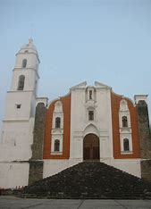

Los Voladores de Tamaletóm
Uno de los legados culturales más valiosos de Tancanhuitz, en términos turísticos, es el ritual de los voladores de Tamaletóm. Este ritual es una antigua ceremonia que antecede a los famosos voladores de Papantla.
Más

Parroquia San Miguel Arcangel
La Iglesia San Miguel Arcángel se encuentra en Tancanhuitz, S.L.P., México, en la región de la Huasteca Potosina.
Más
Rio el Coy
"Las Pozas" es un conjunto de estructuras arquitectónicas de concreto y rutas fantásticas que conforman un jardín escultórico atravesado por un río con cascadas y rodeado por la selva potosina en un extenso terreno.
Más